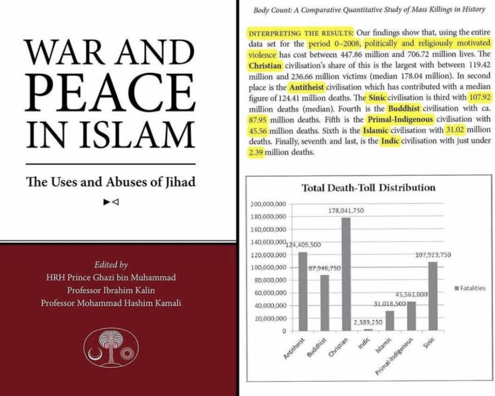

For spreading by sword claim https://www.tiktok.com/@anti__shubuhat/video/7106953773511232774?_t=8Ug7NB4OGMH&_r=1
https://discover-the-truth.com/2017/08/04/the-myth-of-umar-ibn-al-khattab-burning-the-library-of-alexandria/

The notion of Islam being “spread by the sword” can be traced to the Crusades and remained a cornerstone of European Christians’ anti-Islam polemics for centuries. It was picked up in the late 19th and early 20th centuries by Orientalist scholars such as Sir William Muir,5 many of whom―as British colonial officials and/or active Christian missionaries―were in a position to benefit from the vilification of Islam to non-Muslim audiences (i.e., “divide et impera”). The Orientalists crystallized and legitimized pre-existing traditional oral history―or mythistory, to use William McNeill’s term6―and in doing so “translated [historical memory] from myths to facts with a rational scientific attitude.”7
However, even in the ranks of the Orientalists there were those, such as Sir Thomas Arnold and De Lacy O’Leary, who chopped away at the narrative of forced conversions to Islam. O’Leary wrote in 1923 that “the legend of fanatical Muslims sweeping through the world and forcing Islam at the point of the sword upon conquered races is one of the most fantastically absurd myths that historians have ever repeated.”8
The renowned historian Marshall Hodgson, in his pioneering work The Venture of Islam, articulated essentially the same position.9 More recently, Ira Lapidus wrote in A History of Islamic Societies that “European scholars believed that conversions to Islam were made at the point of the sword and that conquered peoples were given the choice of conversion or death. It is now apparent that conversion by force, while not unknown in Muslim countries, was, in fact, rare. Muslim conquerors ordinarily wished to dominate rather than convert, and most conversions to Islam were voluntary.”10
In addition to the historians cited throughout this article, Jamal Malik, Jonathan Berkey, and Kevin Barrett are some of the many other historians who have challenged and discredited the “spread-by-the-sword” narrative.11
1 Conrad Hackett and Michael Lipka, “Why Muslims are the world’s fastest growing religious group,” 6 April 2017, http://www.pewresearch.org/fact-tank/2017/04/06/why-muslims-are-the-worlds-fastest-growing-religious-group/.
2 Karen Armstrong, “We cannot afford to maintain these ancient prejudices against Islam,” The Guardian, 18 September 2006, https://www.theguardian.com/commentisfree/2006/sep/18/religion.catholicism.
3 Barbara Metcalf, “Too Little and Too Much: Reflections on Muslims in the History of India,” The Journal of Asian Studies 54, no. 4 (1995): 953-54.
4 See, for example, Robert Spencer, The Politically Incorrect Guide to Islam (And the Crusades) (Washington, DC: Regnery Publishing, 2005), 107-17.
5 William Muir, The Caliphate: Its Rise, Decline, and Fall (London, 1898; reprint Beirut: Khayats, 1963), 45
6 William H. McNeill, “Mythistory, or Truth, Myth, History and Historians”, The American Historical Review 91, no. 1 (1986): 8.
7 Amalendu Misra, Identity and Religion: Foundations of Anti-Islamism in India (New Delhi: Sage Publications, 2004), 223.
8 De Lacy O’Leary, Islam at the Cross Roads (New York: E.P. Dutton and Co., 1923), 8.
9 Marshall G. Hodgson, The Venture of Islam, Volume 1: The Classical Age of Islam (Chicago: The University of Chicago Press, 1974), 199.
10 Ira M. Lapidus, A History of Islamic Societies (New York: Cambridge University Press, 2014), 271.
11 Jamal Malik, Islam in South Asia: A Short History (Leiden: Brill, 2008), 183; Jonathan Berkey, The Formation of Islam: Religion and Society in the Near East, 600-1800 (New York: Cambridge University Press), 162; Kevin Barrett, “Is Islam Reasonable?,” in Reasonable Perspectives on Religion, ed. Richard Curtis (Plymouth, UK: Lexington Books, 2010), 204.
12 All quotations from the Qur’an in this article are taken from Mustafa Khattab, The Clear Quran: A Thematic English Translation of the Message of the Final Revelation (Lombard, IL: Book of Signs Foundation, 2016).